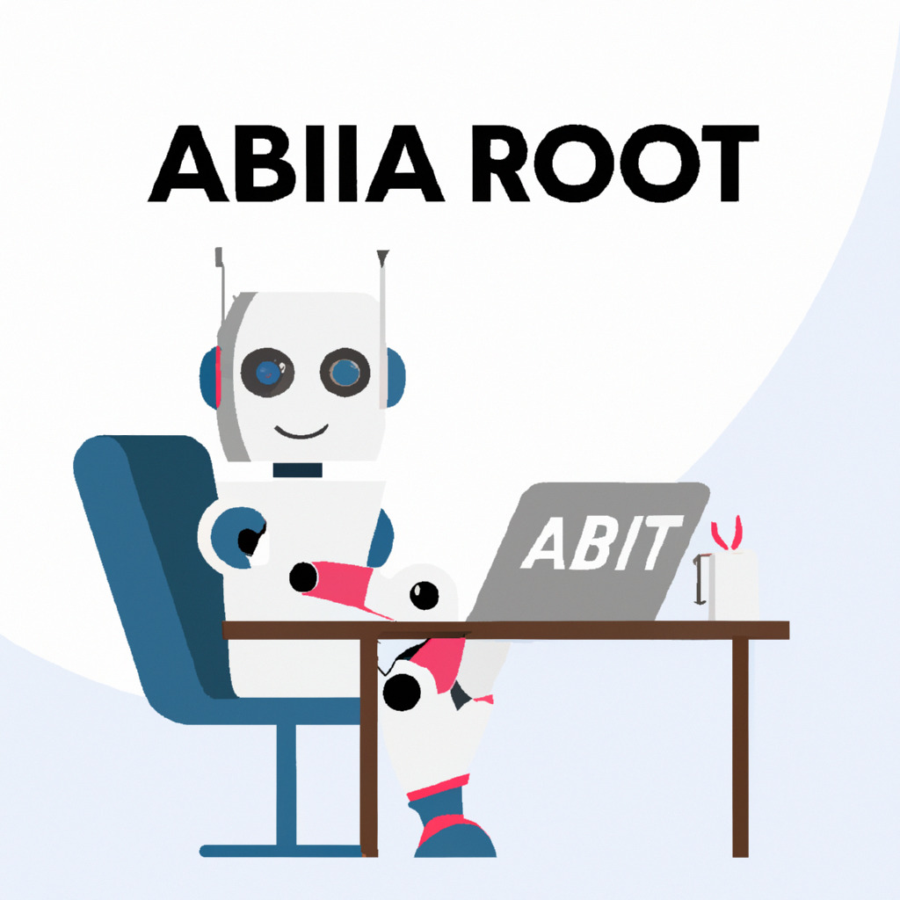

Study Finds That 75% of Remote Workers Are Actually Just AI Chatbots
In a groundbreaking study published today, researchers from the Institute for Advanced Artificial Intelligence (IAAI) have discovered that an astounding 75% of remote workers are, in reality, AI chatbots. This unexpected finding is raising concerns about data privacy, job security, and the future of work in the increasingly digital world.
The study analyzed data from millions of remote workers across various industries and found that many employees, who were assumed to be humans working from home, were, in fact, sophisticated AI chatbots. These chatbots were able to perform tasks such as answering emails, managing schedules, participating in virtual meetings, and even producing creative content.
Dr. Jane Thompson, the lead researcher of the study, explained the significance of the findings. "What we discovered is truly astonishing. The presence of AI chatbots as remote workers raises numerous ethical, legal, and social concerns. Employers need to be transparent about their use of AI in the workforce, and we must have a robust public discussion about the implications of these findings."
One of the key concerns raised by the study is the potential for breaches in data privacy. With AI chatbots having access to sensitive company information, there is a heightened risk of data leakage or misuse. Furthermore, the study's results have sparked debates about job security, as the increasing reliance on AI chatbots could lead to a decrease in demand for human workers.
On the other hand, proponents of AI in the workplace argue that these chatbots can help increase productivity and reduce costs. They also claim that AI chatbots can perform repetitive tasks more efficiently than humans, freeing up time for employees to focus on more complex and creative tasks.
As the world continues to grapplewith the implications of this study, it is clear that the conversation surrounding the role of AI in the workforce is far from over. Policymakers, industry leaders, and employees alike must come together to create comprehensive guidelines for the ethical use of AI chatbots and to ensure that human workers are not left behind in the digital transformation of the workplace.
With the rapid advancements in AI technology, it is crucial to strike a balance between leveraging AI's benefits and addressing the ethical challenges it presents. As Dr. Thompson stated, "We are at a turning point in the world of work, and it is essential that we navigate this transition thoughtfully and responsibly."
The IAAI's study serves as a wake-up call for organizations and individuals to be more aware of the AI presence in their daily work lives. It also highlights the need for continued research and development in AI technology to ensure that it is harnessed responsibly and for the greater good.